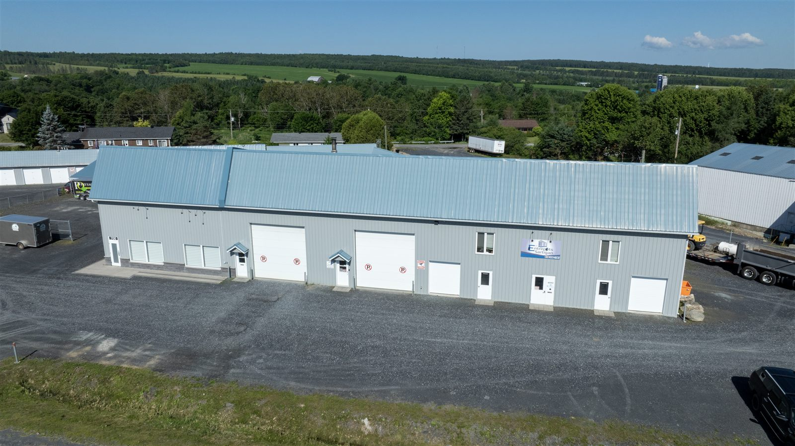

Trois options pour tous vos besoins
Mini-entrepôts personnels ou espaces commerciaux — nous avons la solution adaptée à Saint-Georges de Beauce.
Mini-entrepôts extérieurs
Unités avec porte de garage sectionnelle individuelle et accès direct en véhicule. Protégées contre l'humidité, chauffées et aérées. Idéal pour meubles, véhicules récréatifs, équipement et plus.
- Porte de garage sectionnelle individuelle
- Protégé contre l'humidité
- Chauffé et aéré
- Accès direct en camion ou remorque
- Accessible 24h/24, 7j/7

Entrepôts intérieurs chauffés
Unités à l'intérieur d'un bâtiment chauffé, éclairé et aéré. Idéal pour meubles, documents, électronique et tout ce qui demande une protection contre le froid et l'humidité. Le bâtiment dispose d'une entrée avec porte de garage reliée à la section intérieure.
- Bâtiment chauffé, éclairé et aéré
- Protection contre le froid et l'humidité
- Entrée avec porte de garage reliée à la section
- Idéal pour meubles, électronique, vêtements, archives
- Accessible 24h/24, 7j/7

Locaux commerciaux
Grands espaces pour entreprises, ateliers et commerces. Local commercial, garage commercial et local au 2e étage. Idéal pour usage professionnel à Saint-Georges de Beauce.
- Local commercial 40×60 pi (2 400 pi²)
- Garage commercial 25×60 pi (1 500 pi²)
- Local au 2e étage 30×25 pi (750 pi²)
- Chauffé, éclairé, aéré
- Idéal pour entreprise, atelier, commerce